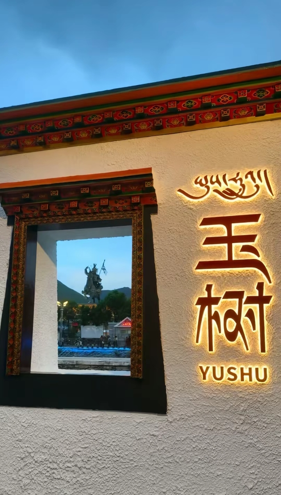
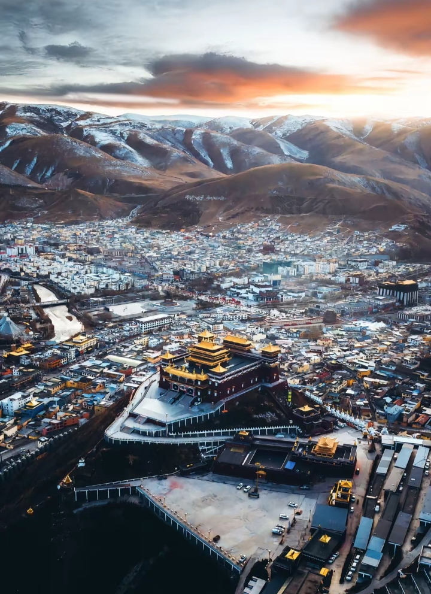
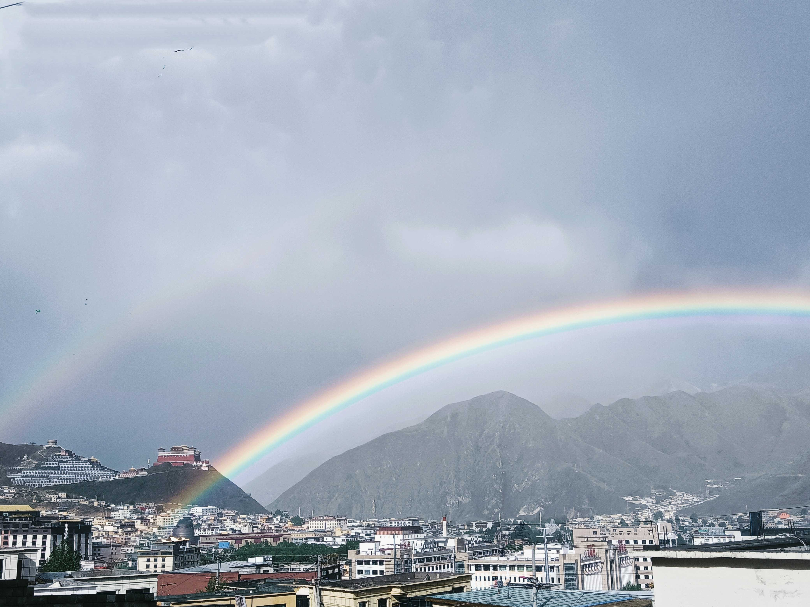

个人简介
关于我
姓名：巴青文次
民族：藏族
爱好：喜欢运动 听歌唱歌跳舞
我来自青藏高原，大美青海、江源玉树，这里是三江发源的地方、是格萨尔王纵马驰骋的 摇篮、是传说神仙居住的地方、是歌舞放飞的乐园。 这里有世界之最的嘉那玛尼石经城、 有千年唐蕃的足迹、有国家非遗伊舞。
高原明珠--玉树 这里的自然景观自带雄浑气韵，是野生动物的栖息地，也是治愈心灵的神圣家园， 这里有最纯粹的信仰，每一次随风飘扬的经幡带去的是对众生最美好的祝福、每一次撒像天空的隆达 都在祝愿人生路上的乘风与破浪
我的故乡
  